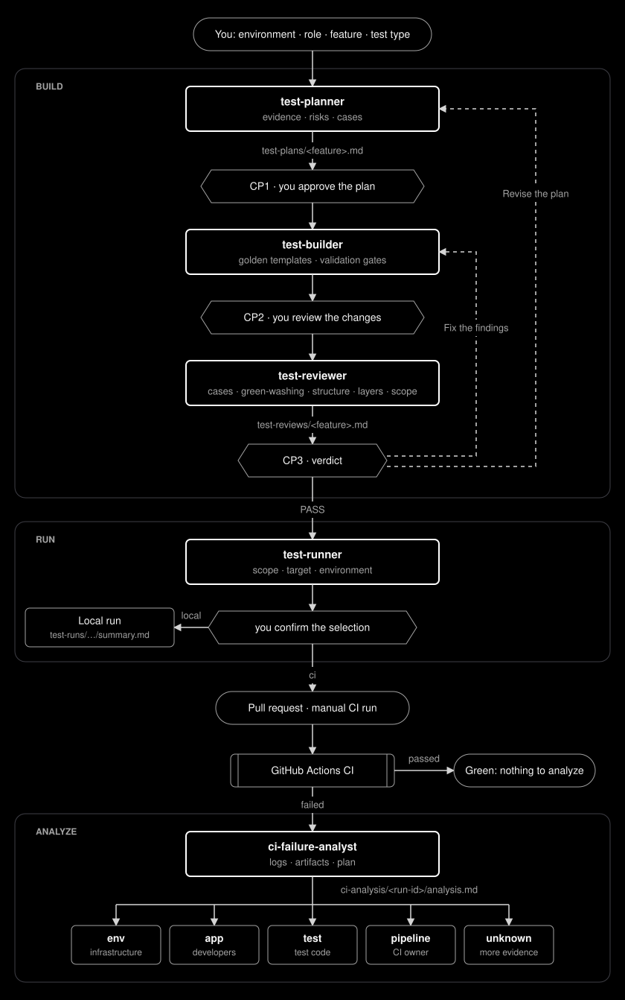

One quality system.
Configured for your application.
API, UI, database, accessibility, visual and performance testing in one architecture. Answer a few questions, pick your modules, browsers and environments, and start from golden templates that an architecture lint enforces, whoever writes the code.
Everything that differs between projects
is configuration, not framework code.
The framework core stays template-owned. Your application, its environments, logins and conventions live in project-owned files that setup creates and the schemas validate at load time.
Modules
Enable only the test types you need. Disabled modules get no CI jobs; without performance, the Lighthouse packages stay out too.
Browsers
Shared UI specs run in every browser you choose, without browser-specific copies.
Environments & permissions
Each environment says what it allows, so destructive or load tests never reach the wrong target.
stagingdbdestructiveperflocaldbdestructiveperfLogin & roles
The login method (NextAuth session, bearer token, or none) is configuration. Role accounts come from .env and CI secrets; doctor checks that each role logs in.
Your own golden examples
Register reviewed tests as approved examples. From then on they come first, ahead of the generic templates, for people and agents alike.
CI from the config
The workflow plans one job per enabled project. A manual run narrows it to an environment, projects or case IDs.
export default defineFrameworkConfig({ modules: { api: true, ui: true, smoke: true, accessibility: true, visual: true, database: false, performance: false, }, browsers: ["chromium", "webkit"], auth: { browser: { strategy: "nextAuth", /* … */ }, api: { strategy: "bearer", /* … */ }, }, // names of .env and CI secrets, never values roles: { user: { usernameEnv: "USER_USERNAME", passwordEnv: "USER_PASSWORD", }, }, });
Two stages. Then your IDE takes over.
The template folder never changes, so the next project starts from the same clone. Setup asks only about your application, never about framework internals.
Framework setup
Menus for every choice; a new project with its own git next to the template.
- modules, browsers, environments
- optional OpenAPI URL for contract discovery
- npm ci · browsers · .env · doctor
First tests optional
A dedicated test account, masked, written only to the git-ignored .env.
- becomes the user role
- doctor checks it logs in
- skip it now, run npm run onboard later
Your IDE
AGENTS.md, Copilot instructions and MCP servers are already in place.
- configure login and roles
- qa:sync-ci-secrets prepares CI
- write tests from golden templates
Five optional agents.
You approve every step.
GitHub Copilot agents you copy into a project and change freely. They plan, build, review, run and analyze, and every hand-over is a button you press. None of them is allowed to make a failing test green, and the lint and the reviewer check it.

test-planner CP1
Risks, techniques and cases with a source for every expected result.
test-builder CP2
Implements the approved plan from the golden templates and runs the gates.
test-reviewer CP3
Cases against the plan, green-washing, structure, layer boundaries and scope.
test-runner confirm
Selects what a change needs, with a reason for each test; local or CI.
ci-failure-analyst
Root cause per failure: env, app, test, pipeline or unknown, with its owner.
A test is green only when the application is right.
The architecture is not a wiki page. npm run lint:architecture enforces it on every change, in the editor and in CI, with a test for every rule.
22 project rules,
each citing the standard it enforces.
Layer boundaries, the shapes of the golden templates, the test plan format and plan-to-spec traceability. A self-test generates projects from several setup answers and runs the gates against them.
Every layer, with reports from real runs.
Execution evidence from the UPEX DOJO reference implementation that the golden templates are derived from.
API & contract
TypeBox schemas with runtime validation, positive and negative scenarios, deterministic data.
UI & cross-browser
Shared scenarios on Chromium, Firefox and WebKit, programmatic login and API setup.
Accessibility
axe-core through one central WCAG policy; real violations are reported, never suppressed.
Visual regression
Linux baselines generated in Docker and approved by a person, never updated to pass.
Performance
k6 for the API, Lighthouse for public and authenticated pages, with explicit thresholds.
Database
Typed PostgreSQL clients, parameterized SQL and a guarded reset, only where allowed.
Fourteen decisions, written down.
Architecture decision records explain why the template is the way it is, including the ones that were reversed.
Clone it. Answer the questions.
Write your first test.
❯ git clone https://github.com/szabihudak/szabihudak-template-SDET-framework.git ❯ cd szabihudak-template-SDET-framework ❯ ./install.sh